ブラウザで動く平面 2 次元の河床変動・土石流シミュレータの使い方を、画面と計算例で説明します。
このツールは現象を確かめるためのものです。計算の結果は、何かを保証するものではありません。
インストールはいりません。Chrome・Edge・Safari・Firefox の新しい版で動きます。計算はすべて手元のブラウザの中で行い、データはどこにも送りません。
| 分野 | 内容 |
|---|---|
| 流れ | 平面 2 次元の浅水流（HLL 系の有限体積法、2 次精度）。射流・跳水・乾湿の境界も扱う |
| 流砂 | 混合粒径の掃流砂（芦田・道上式、修正 Egiazaroff 式の遮蔽効果）、非平衡の侵食・堆積速度式（高橋・里深）、土石流（高橋の式） |
| 河床材料 | 粒径階 12 まで、河床材料 12 種類まで。場所ごと（区間・左岸からの距離・平面図の多角形・DEM の多角形）に変えられる |
| 構造物 | 不透過型・透過型（スリット、複数スリット、鋼製格子型、鋼製スリット型）の砂防堰堤。閉塞も扱う |
| 地形 | 数値で作る河道（川幅・勾配の変化、湾曲、支川、渓流の作り込み）、測量の横断・縦断、格子 CSV、DEM（基盤地図情報・GeoTIFF・ASCII） |
| DEM の流域 | 流域界・谷筋・谷頭の自動抽出、雨（一様・XRAIN）、斜面崩壊（表層・深層）、天然ダム（越流・進行性崩壊・すべり）、砂防堰堤 |
| 結果 | 鳥瞰（3D）、平面図、横断、縦断（谷に沿った線も）、流量・流砂量の時系列、堰堤ごとの堆砂量、CSV の書き出し |
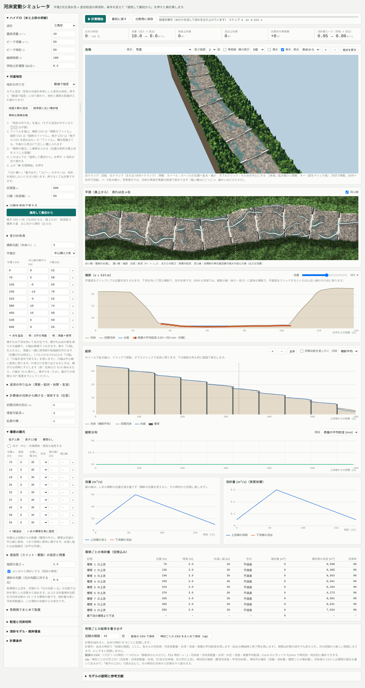
画面の左が条件の欄、右が結果の図です。左の欄の幅は、境目をドラッグして広げられます。
基本の流れ
条件を変えたら、もう一度「適用して最初から」を押してください。押すまでは前の条件のままです。
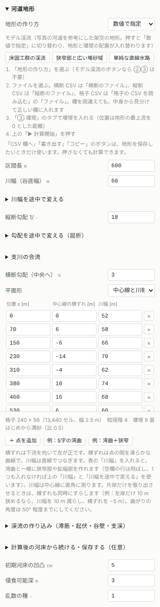
「河道地形」の 地形の作り方 で選びます。
| 作り方 | 使う場面 |
|---|---|
| 数値で指定 | 区間長・川幅・勾配などの数値から、理想化した渓流を作る。まず試すとき |
| 横断・縦断の測量値 | 測量の横断（x, s, z）と縦断（x, z）の CSV から作る |
| 格子の CSV を読み込む | 格子状の標高（行列か x, y, z）を読む。計算後の河床を保存したものも読める |
| DEM から流域を選ぶ | DEM を読み、流域を選んで切り出す（10 章） |
数値で指定のときに使える追加の設定：
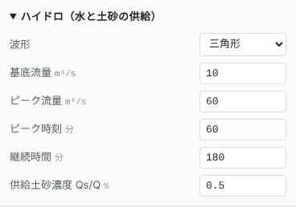
上流端から流す水と土砂です。波形を選びます。
| 波形 | 内容 |
|---|---|
| 三角形 | 基底流量からピーク流量まで直線で上がり、下がる |
| 一定 | 一定の流量 |
| 表で入力 | 時刻・流量・供給土砂量の表 |
| 土石流の一波 | 基底流量（清水）に、三角形の土石流の波（ピークは混合物の流量、土砂濃度 C）を重ねる。流砂モデルは自動で「土石流」になる |
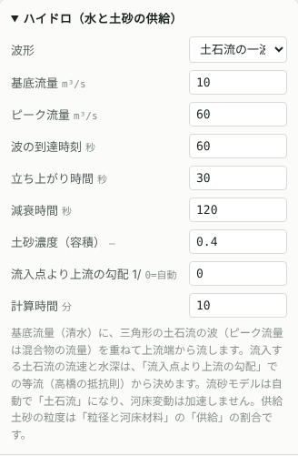
供給土砂の粒度は、6 章の表の「供給」の列です。
計算例（土石流の一波）：既定の河道に土石流の一波を流した 10 分後。堰堤の上流に堆積していく様子が分かります。
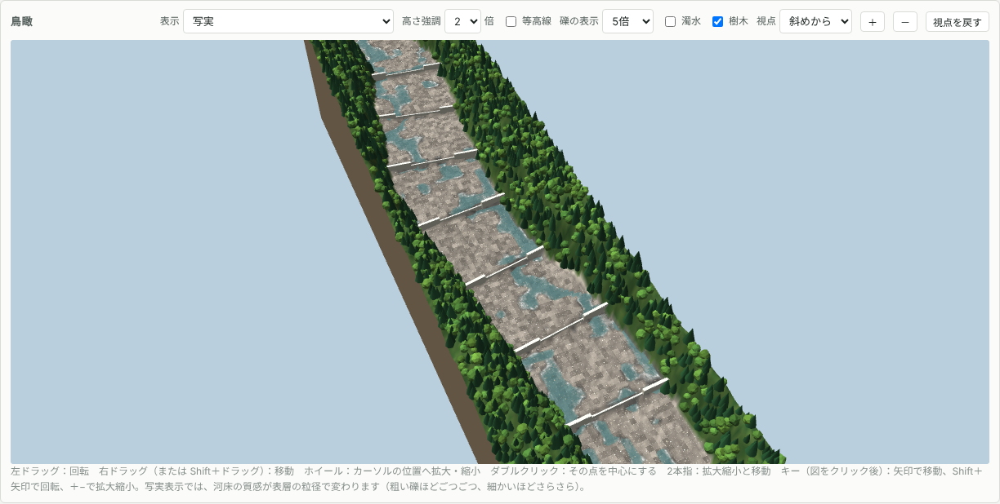
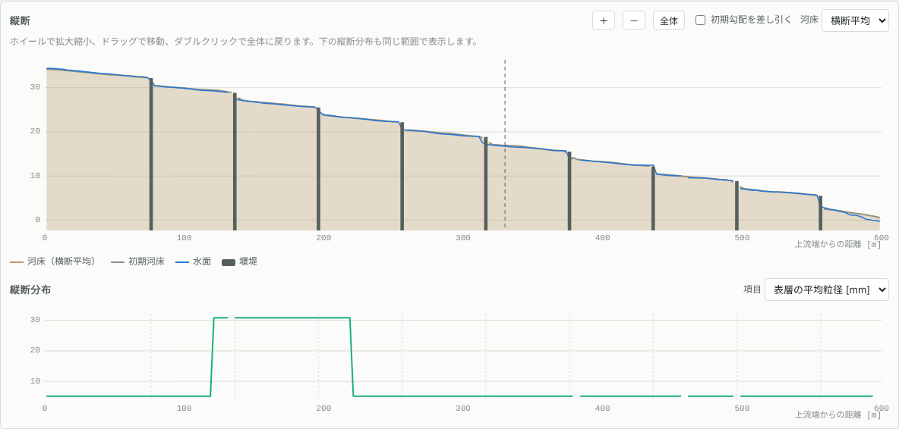
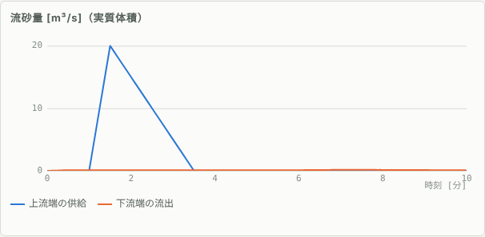
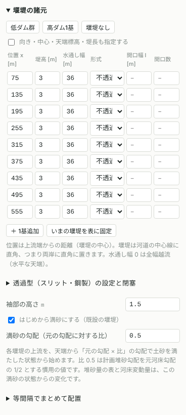
「堰堤の諸元」の表で、位置 x・堤高・水通し幅・形式を決めます。「等間隔でまとめて配置」で低ダム群を一度に置けます。「向き・中心・天端標高・堤長も指定」をオンにすると、堰堤の向き（回転）・中心・天端標高・堤長も指定できます。
| 形式 | 開口 |
|---|---|
| 不透過 | なし |
| スリット | 水通しの中央に 1 本（開口幅 l） |
| 複数スリット | n 本（開口幅 l、柱の幅 wp） |
| 鋼製格子型 | 鋼管の格子（純間隔 l、部材の幅 w） |
| 鋼製スリット型 | 鋼製の縦部材（純間隔 l、部材の幅 w） |
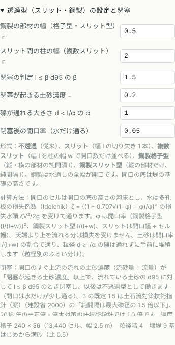
透過型は、開口を多孔板の損失（Idelchik）で水が通り、粒径 d ≥ l/α の礫は通れません。流れの土砂濃度と l ≤ β d95（既定 β = 1.5）で閉塞を判定し、閉塞後は不透過型として働きます。鋼製の部材の幅とスリット間の柱の幅は別々に指定します。
「はじめから満砂」で、計算の最初から堰堤の上流を埋めておけます（堆砂勾配と元の勾配の比で指定）。
粒度分布の作り方は 3 通りです。
表の下に、河床・供給・各材料の dm・d16・d50・d84・d90 と粒径加積曲線が出ます。
粒径階は共通で、河床材料を 12 種類まで持てます。
計算例：x = 120〜220 m を粗い材料 B（dm 60 mm）にした場合の表層の平均粒径。
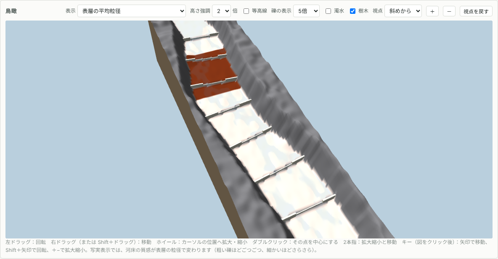
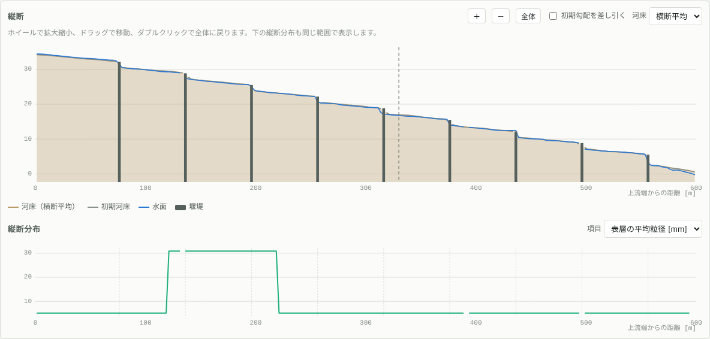
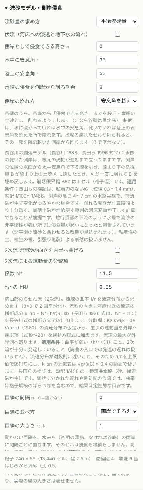
流砂量の求め方
| モデル | 式 | 使う場面 |
|---|---|---|
| 平衡流砂量 | 芦田・道上式（粒径別）。限界掃流力は芦田・高橋・水山式・岩垣式・一定値。粒径別は修正 Egiazaroff 式（遮蔽効果）か、全粒径で平均粒径の値 | 掃流砂が主の河道 |
| 侵食・堆積速度式 | 高橋・里深（1999）の非平衡の掃流砂 | 水際や急変部で非平衡が強いとき |
| 土石流 | 高橋の侵食・堆積速度式と抵抗則（石礫型・乱流型） | 土石流 |
修正 Egiazaroff 式は、粒径別の限界掃流力を平均粒径との比で変える式で、細かい粒子は大きな粒子の陰に隠れて動きにくく、大きな粒子は突き出して動きやすくなる効果（遮蔽効果）を表します（d/dm < 0.4 は芦田・道上の修正で一定値）。これにより、細粒の選択的な流出や粗粒化（アーマー化）が起きます。
側岸：安息角を超えた斜面を崩す（水中・陸上の安息角を分ける）。長谷川の崩落モデルも選べます。水際の乾いた側岸を削る割合、侵食される側岸の高さも指定できます。
伏流：河床への浸透と堆積層の中の地下水の流れを計算します（透水係数は Kozeny–Carman 式か指定値）。
2 次流：湾曲部のらせん流で流砂の向きを内岸へ曲げる（長田ら 1996）、運動量の分散項（Kalkwijk・de Vriend 1980）。
巨礫：岸に動かない巨礫を並べる（高橋・里深・奥村 1996）。
それぞれの式と適用条件は、欄の中の説明と docs/model.md にあります。
既定の条件（低ダム群 9 基、三角形のハイドロ）で 20 分計算した結果です。
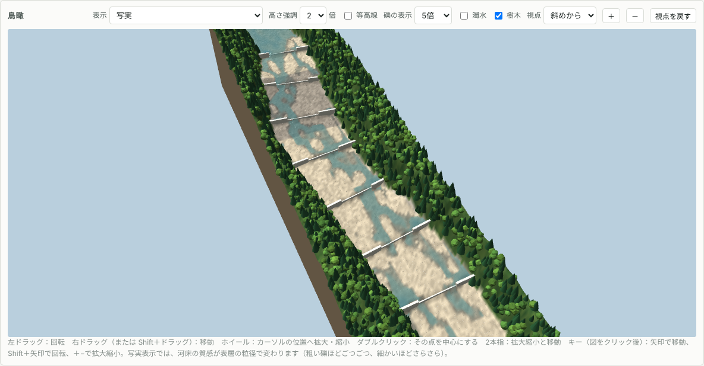
表示で色を切り替えます：写実、陰影＋段彩、赤色立体風（尾根が明るく谷が暗い・急なほど赤い）、傾斜、河床位、水深、流速、河床変動量、表層の平均粒径、無次元掃流力、フルード数、流れの土砂濃度、伏流の飽和度など。
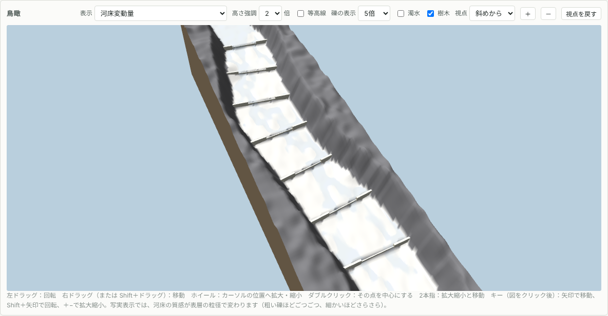
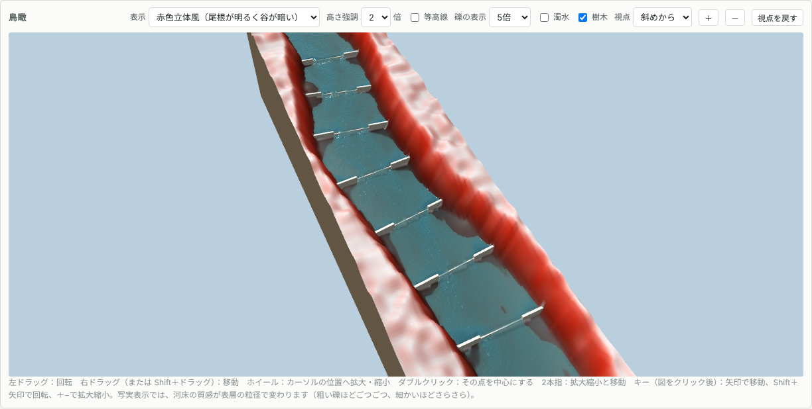
操作：左ドラッグで回転、右ドラッグ（Shift＋ドラッグ）で移動、ホイールで拡大・縮小、ダブルクリックでその点を中心に。高さ強調・等高線・礫の表示・濁水・樹木も切り替えられます。
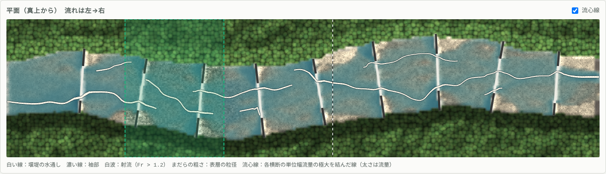
真上から見た図です。白い線は堰堤の水通し、白波は射流（Fr > 1.2）、流心線は単位幅流量の極大を結んだ線です。平面図をクリックすると、その位置の横断を表示します。
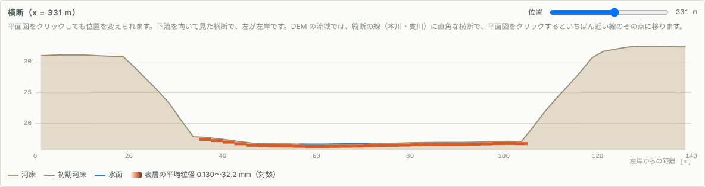
下流を向いて見た横断で、左が左岸です。下の色の帯は表層の平均粒径です。
縦断（6 章の図）は、河床（横断平均か最深）・初期河床・水面・堰堤を描きます。「初期勾配を差し引く」で変化が見やすくなります。下の「縦断分布」で平均粒径・流砂量・水面幅・変動量を選べます。ホイールで拡大、ドラッグで移動、ダブルクリックで全体に戻ります。
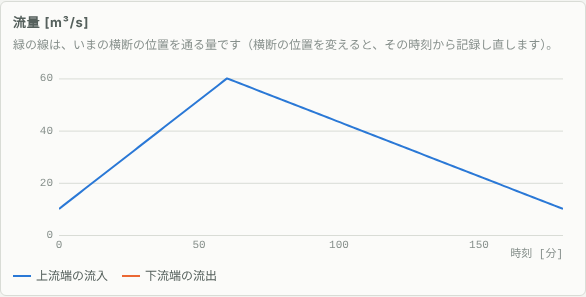
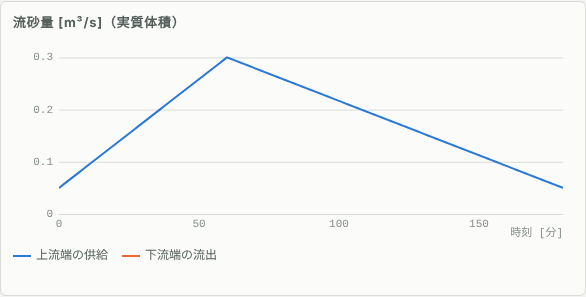
緑の線は、いまの横断の位置を通る流量・流砂量です（横断の位置を変えると、その時刻から記録し直します）。表は堰堤ごとの区間の堆砂量と満砂時の目安です。
ここからは、国土地理院の 基盤地図情報 数値標高モデル 5m
メッシュ（DEM5A） の 2 次メッシュ
553706（FG-GML-553706-DEM5A-20251113.zip）を使って説明します。
基盤地図情報ダウンロードサービス（https://fgd.gsi.go.jp/download/）で「数値標高モデル」→「5m メッシュ」を選び、範囲を指定してダウンロードします（ZIP）。ZIP のまま読み込めます（ZIP の中の ZIP も開きます）。複数のメッシュの ZIP を一度に選ぶと、つないで読みます。
出典：国土地理院 基盤地図情報 数値標高モデル。データの利用は国土地理院の利用規約に従ってください。このリポジトリには DEM のファイルを入れていません。
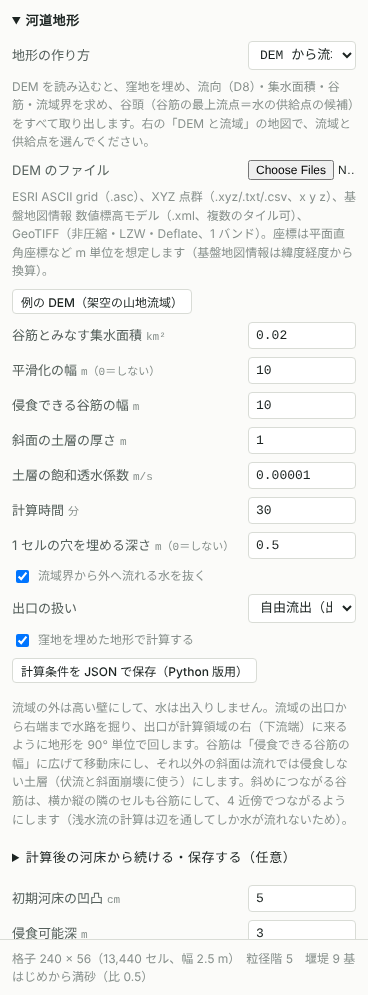
読み込むときに次を自動で行います。
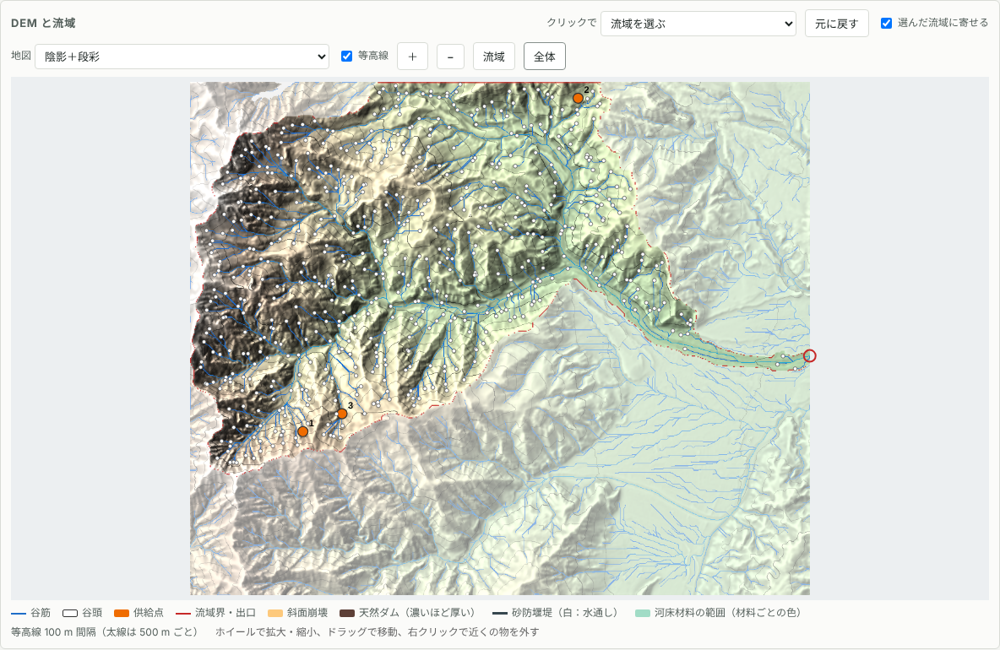
地図の表示は、陰影＋段彩・赤色立体風・傾斜・段彩のみと、等高線を選べます。ホイールで拡大・縮小、ドラッグで移動、「流域」「全体」で表示範囲を戻せます。
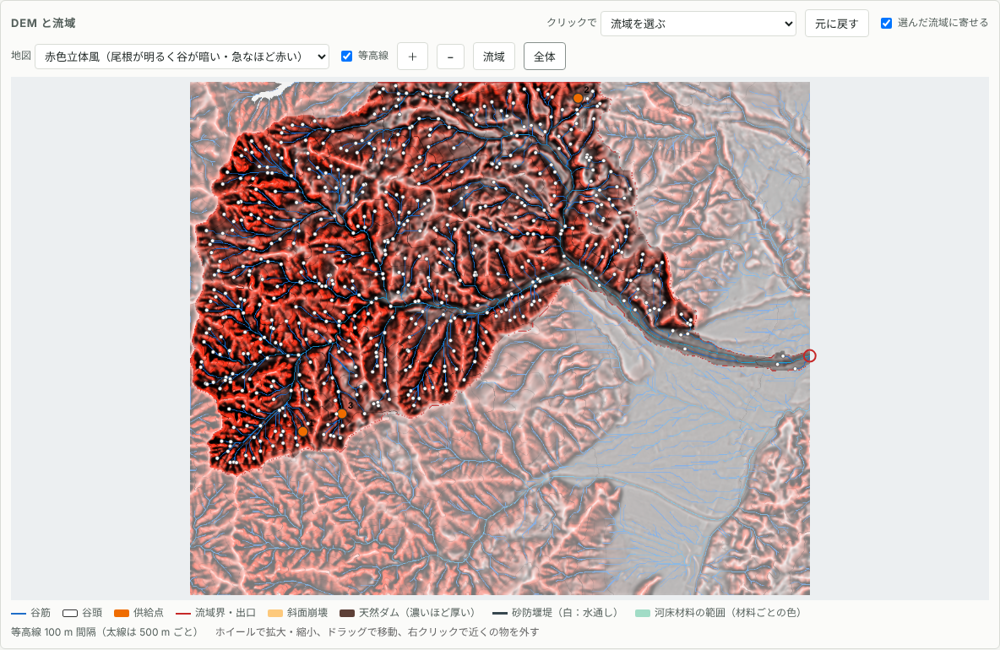
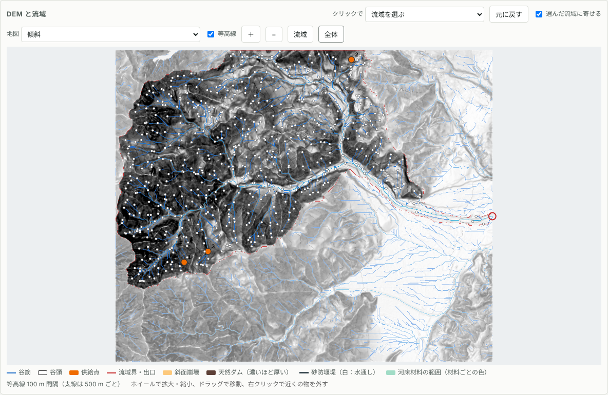
地図の上の 「クリックで」 で操作を選びます。
| 操作 | 内容 |
|---|---|
| 流域を選ぶ | DEM の縁へ出る流域から選ぶ |
| 出口を指定（小流域） | 谷筋のセルをクリックすると、その上流を流域にする |
| 供給点を選ぶ | 谷頭をクリックして水と土砂を流す点にする（もう一度で外す） |
| 崩壊を置く / 天然ダムを置く / 砂防堰堤を置く / 河床材料の範囲を描く | 各章を参照 |
| 消す | クリックした物を外す |
ここでは、出口を指定して 1.64 km² の小流域を選びました（赤い丸が出口、橙の丸が供給点）。
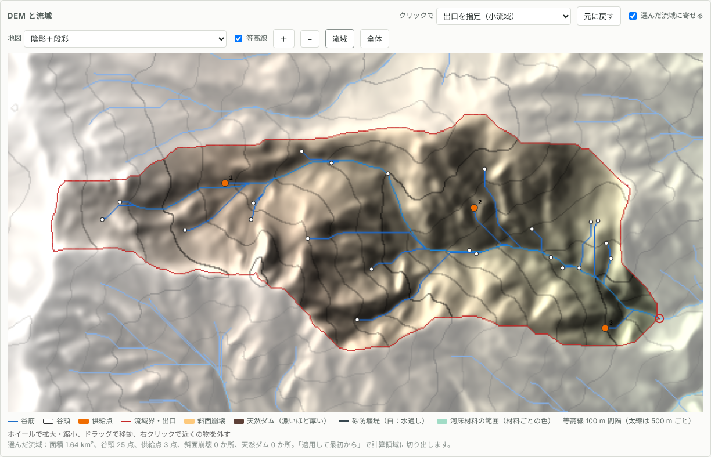
置いた物は 「元に戻す」（Ctrl＋Z）、右クリック、または「消す」で取り消せます。
出口の扱い：既定は「自由流出」です。出口の先に緩衝の水路（計算格子 3 セル）をとり、その先で水と土砂を抜いて流出として数えます。「流域界から外へ流れる水を抜く」をオンにすると、流域界（分水界）を越えて外へ流れる水も抜きます。
「土石流の発生形態・雨・斜面崩壊（DEM）」→「谷頭の供給点とハイドロ」で、供給点ごとの波形を決めます。ここでは 2 点とも 土石流の一波（ピーク 20 m³/s、濃度 0.3、立ち上がり 60 秒、減衰 300 秒）にしました。
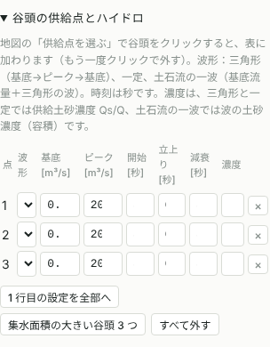
「適用して最初から」を押すと、流域を切り出して出口が右端に来るよう回し、計算領域を作ります。流域の外は高い壁、谷筋（幅は「侵食できる谷筋の幅」）は侵食できる河床、斜面は侵食しない土層になります。
計算例（15 分後）
DEM の流域は広いので、鳥瞰は「高さ強調 1 倍」にし、「－」で少し縮小すると全体が見えます（下の図はこの見え方です）。
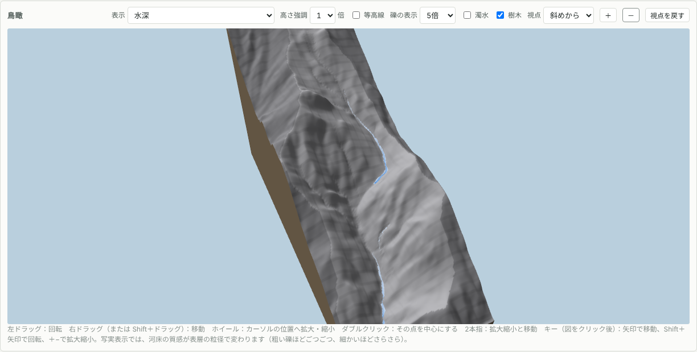
縦断は谷に沿った線で描きます。「線」で本川・支川を切り替えられます。横断はその線に直角です。平面図をクリックすると、いちばん近い線のその点の横断になります。
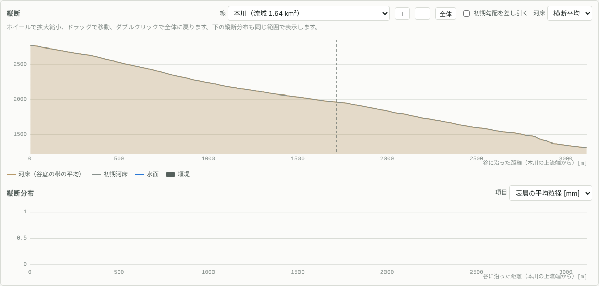
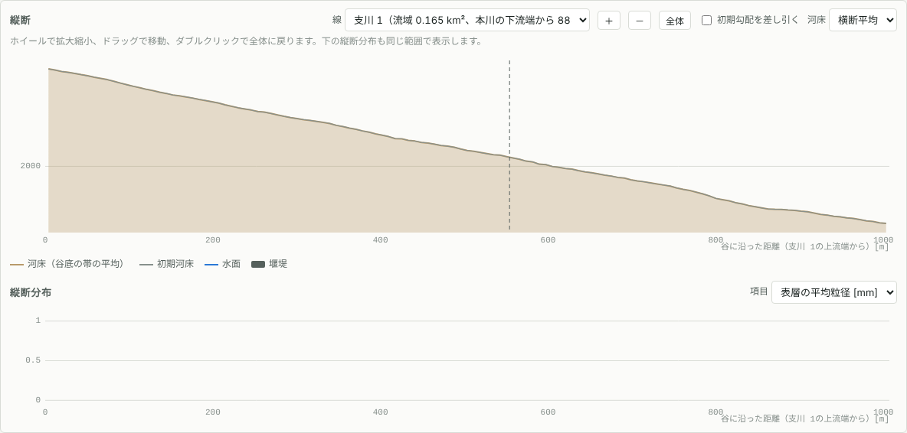
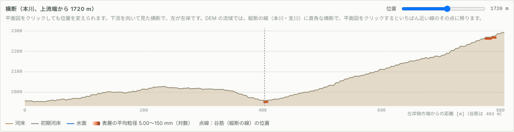
流量の図の青は供給点・雨の合計の流入、橙は出口からの流出（土石流は水と土砂の混合物）、緑は横断の位置を通る量です。
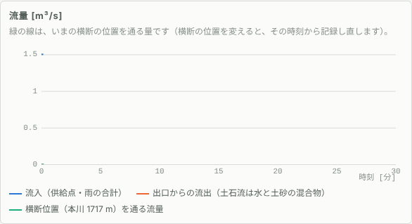
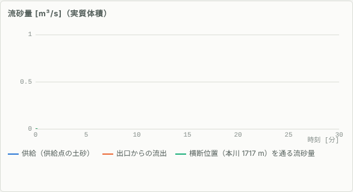
「雨（谷へ集まる水）」で 雨を降らせる をオンにします。
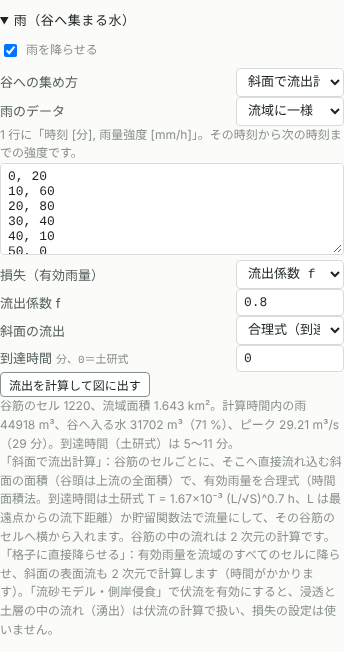
| 項目 | 選び方 |
|---|---|
| 雨のデータ | 流域に一様（ハイエトグラフ：時刻 [分], 強度 [mm/h] の表）／格子の雨（XRAIN などを変換した CSV） |
| 谷への集め方 | 斜面で流出計算して谷筋へ入れる（集中化）／格子に直接降らせる（表面流で計算） |
| 損失 | 流出係数 f（合理式）、一次流出率 f1・飽和雨量 Rsa（貯留関数法）、飽和透水係数 ks と土層（浸透） |
| 斜面の流出 | 合理式（到達時間は土研式か指定）／貯留関数法 s = K q^P |
「流出を計算して図に出す」で、谷へ入る流量の時系列を確かめられます。
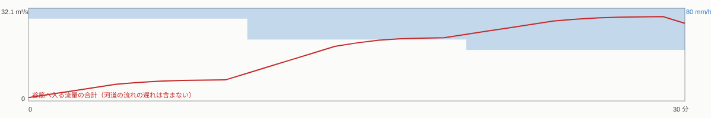
本物の XRAIN（X バンド MP レーダ雨量計、250 m メッシュ・1
分）の代わりに、形をまねた架空の雨を作るスクリプト
tools/make_pseudo_xrain.py
を用意しました。背景の雨に、北東へ動く対流セル（最大 80
mm/h）を重ねます。
python tools/make_pseudo_xrain.py # 553706 の範囲、120 分、5 分おき
python tools/make_pseudo_xrain.py --minutes 180 --step 1 --peak 100 --out rain.csvできたファイル（examples/pseudo_xrain_553706.csv）は、1
行に「時刻 [分], 経度, 緯度, 雨量強度 [mm/h]」です。本物の XRAIN
も、この形に変換すれば読めます。「雨のデータ」を
格子の雨 にして読み込みます。
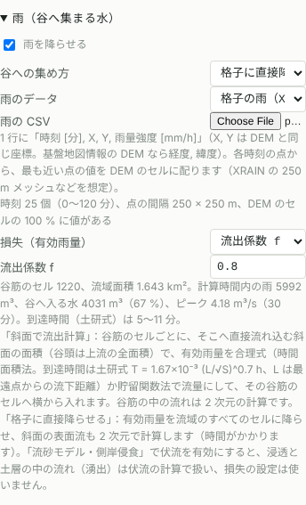
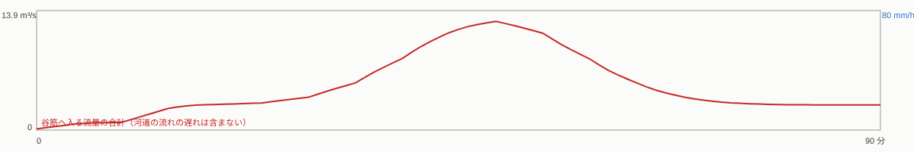
計算例：疑似 XRAIN を「格子に直接降らせる」で 60 分計算した結果です（対流セルが流域を通る 50 分ごろに流量が増えます）。
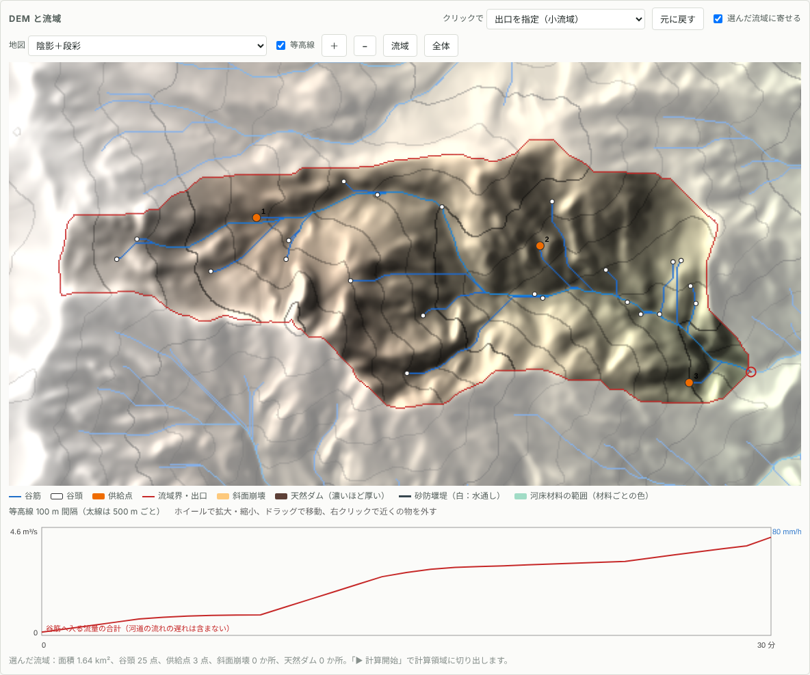
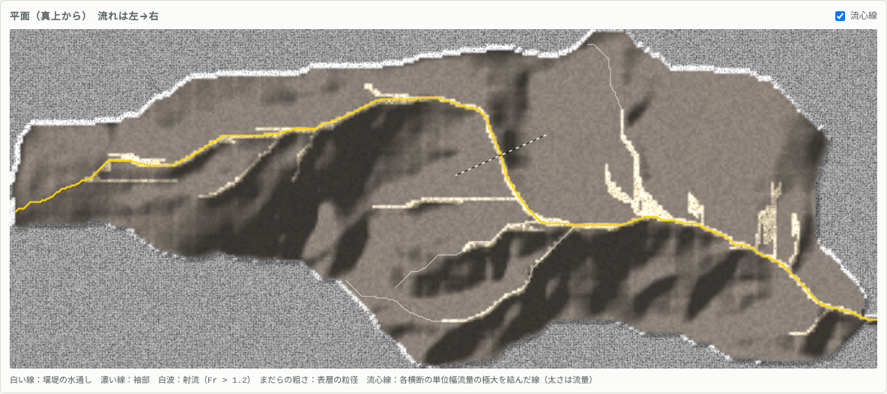
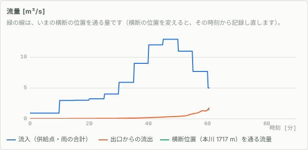
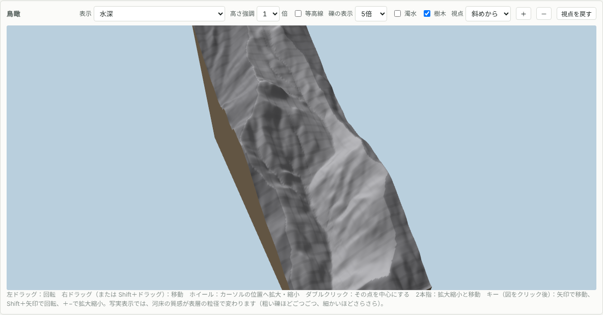
「土石流の発生形態」を 崩壊型 にし、地図の「崩壊を置く」で置きます。崩壊の形は、円（中心をクリック）か 多角形（頂点をクリック、ダブルクリックか「多角形を閉じる」で確定）です。
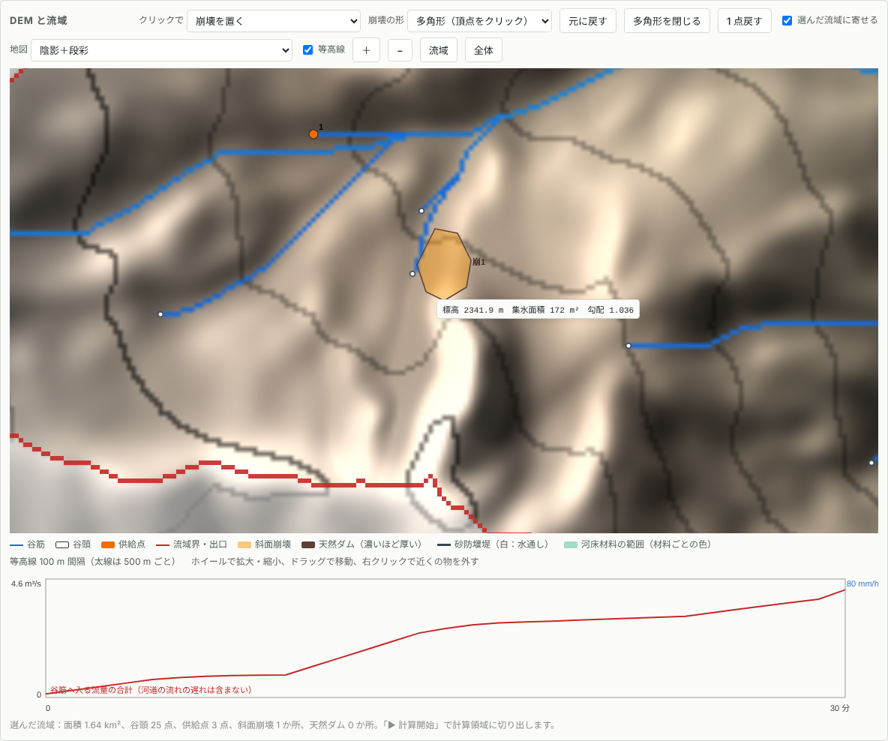
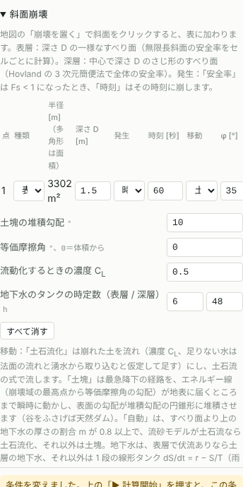
| 項目 | 内容 |
|---|---|
| 種類 | 表層（無限長斜面、一様な深さ D）／深層（Hovland の 3 次元簡便法、さじ形のすべり面） |
| 崩れる条件 | 安全率（雨と地下水位から計算した Fs < 1）／時刻（指定の時刻に崩す） |
| 動き方 | 自動／土石流化（水と混ざって流れる）／土塊（エネルギー線で止まるまで一体で動き、円錐状に堆積） |
| φ・c・初期の飽和度 | 土の内部摩擦角・粘着力・地下水 |
計算例 1（表層・土石流化）：60 秒に崩れ、土石流として谷を下る。
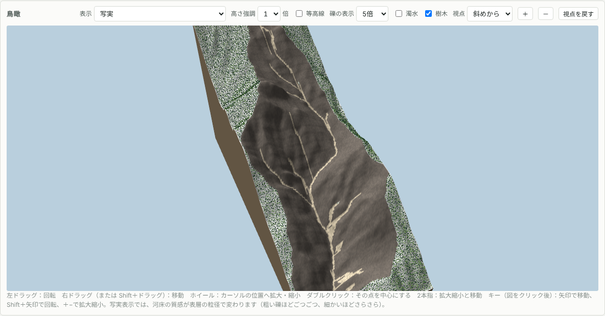
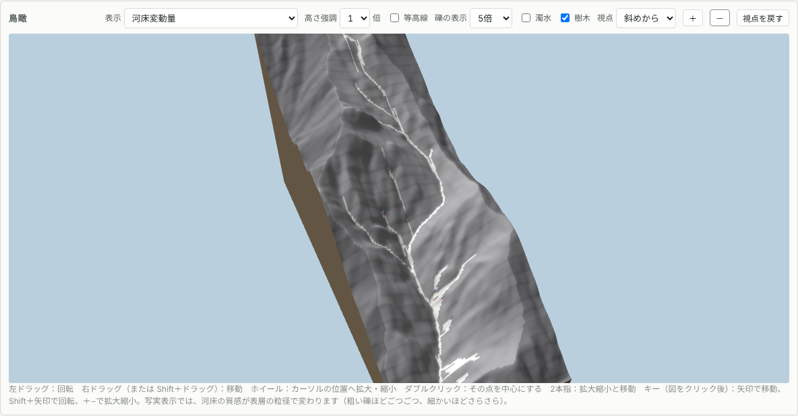
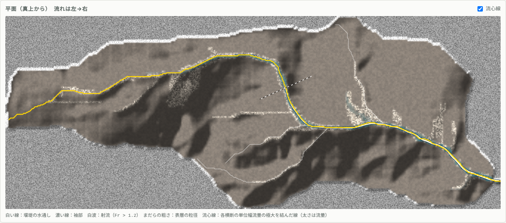
計算例 2（深層・土塊）：同じ範囲を深さ 8 m の深層崩壊・土塊にした場合。土塊は谷へ移り、谷をふさぐと天然ダムとして扱います。
「土石流の発生形態」を 天然ダム決壊型 にし、地図の「天然ダムを置く」で谷筋をクリックします。「例：本川に天然ダムと上流の供給点を置く」で、谷の深い所に例のダムと上流の供給点（40 m³/s）を置けます。
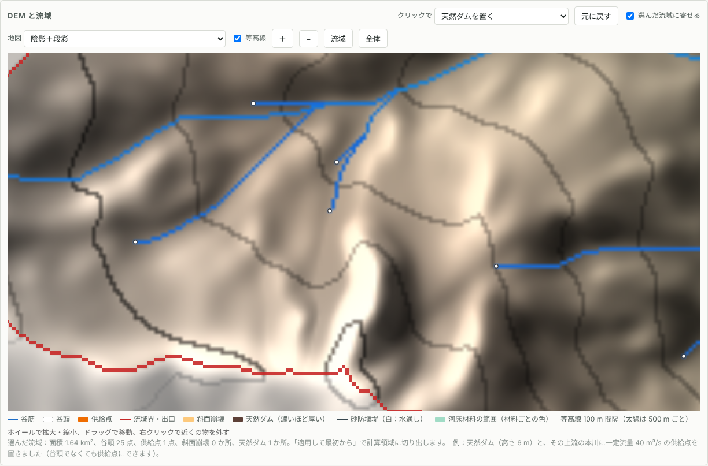
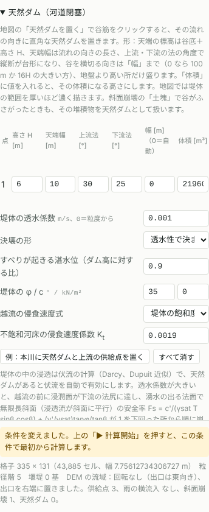
形：高さ H、天端幅、上流・下流の法の角度、谷を横切る幅（0 で自動）。体積を入れると、その体積になる高さにします。
決壊の形は堤体の透水係数で分かれます。
| 透水係数 | 決壊の形 |
|---|---|
| 小さい | 越流決壊：湛水が天端を越え、越流で侵食（不飽和の侵食速度式も選べる） |
| 大きい | 進行性崩壊：浸透で下流面が飽和し、安全率 < 1 の所から崩れていく |
| 「すべり」を選ぶ | 湛水位が設定の高さに達すると、下流のり先から上流の天端へすべる |
計算例 1（越流決壊、透水係数 0）
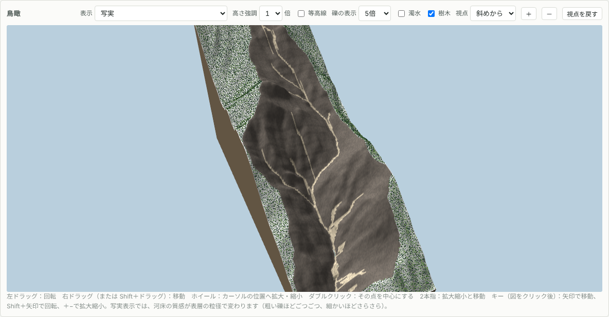
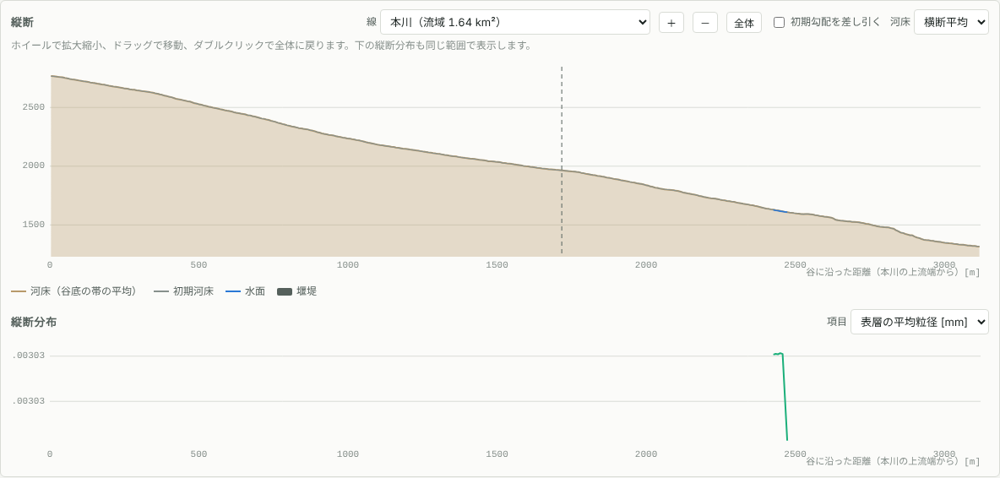
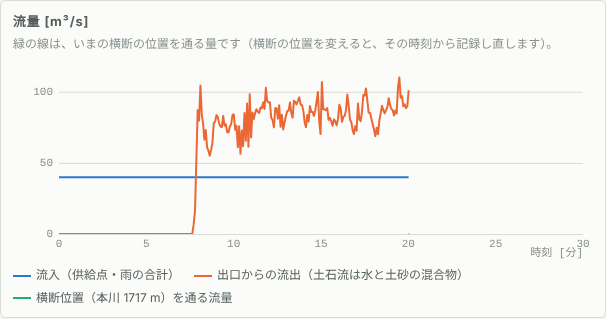
計算例 2（進行性崩壊、透水係数 0.03 m/s）
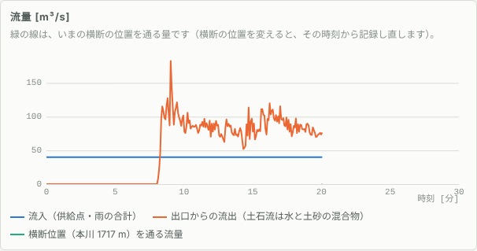
地図の「砂防堰堤を置く」で谷筋をクリックすると、流れの向き（前後 3 セルの谷筋から）に直角な堰堤を置きます。表で型・高さ・水通し幅・堤長（0 で袖が地盤に届く長さを自動）・開口を決めます。ここでは下流に不透過型、上流にスリット型を置きました。
堰堤ごとの堆砂量は、堰堤の上流面から上りに谷をたどった範囲で数えます。
「粒径と河床材料」で材料 B などを作り（6 章）、地図の「河床材料の範囲を描く」で多角形を描きます。
python/sabo2d.py はブラウザ版と同じ計算をする Python
版です（結果は丸め誤差の範囲で一致）。大きな格子や長い計算、まとめての計算に使えます。
pip install numpy matplotlib
python python/sabo2d.py --preset A --minutes 60 --out result # 既定の河道
python python/sabo2d.py --debris --debris-peak 30 --out result_debris # 土石流の一波
python python/sabo2d.py --params sabo2d_params.json # ブラウザ版で保存した条件をそのまま
python python/sabo2d.py --dem FG-GML-553706-DEM5A-20251113.zip --dem-outlet "X,Y" --dx 10 --debris \
--rain "0:30,30:60,60:0" --dem-dam "X,Y,8" --slide-poly "X1,Y1;X2,Y2;X3,Y3@2,shallow,time,60,fluid"DEM の座標（X, Y）は、DEM
の座標系（基盤地図情報は経緯度を平面に直した m）です。ブラウザ版の DEM
の欄の「計算条件を JSON で保存（Python
版用）」で保存し、--params
で読むのが確実です。python python/sabo2d.py --help
ですべてのオプションを表示します。Jupyter（Google
Colab）用のノートブック python/sabo2d.ipynb
もあります。
画面の画像は
tools/manual_shots.js（Playwright）で撮りました。node tools/manual_shots.js dist/sabo2d.html <DEM の ZIP>
で撮り直せます。